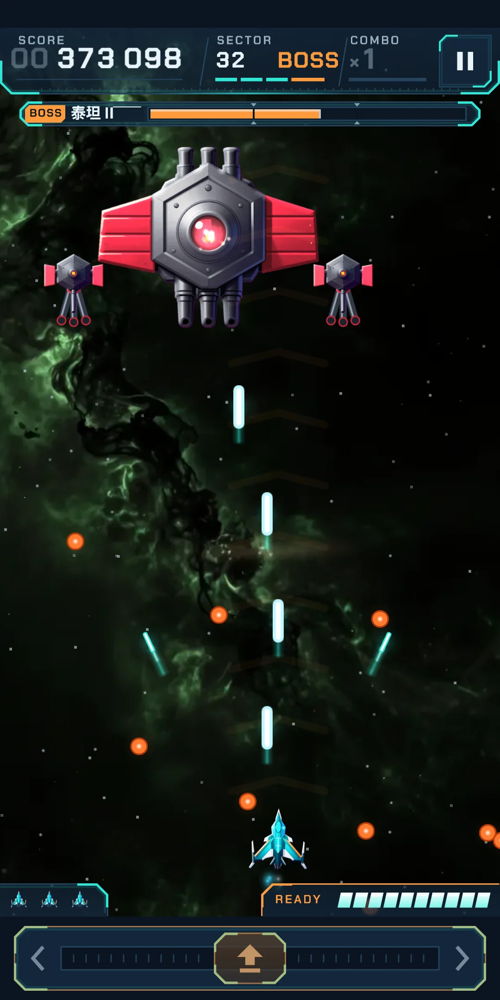
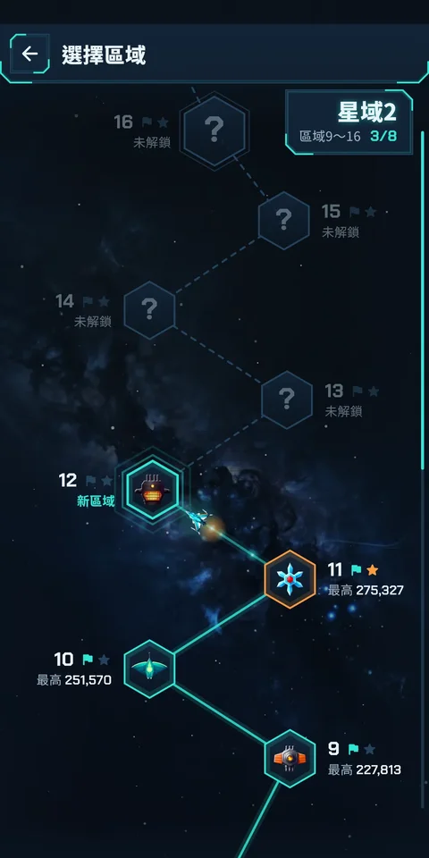
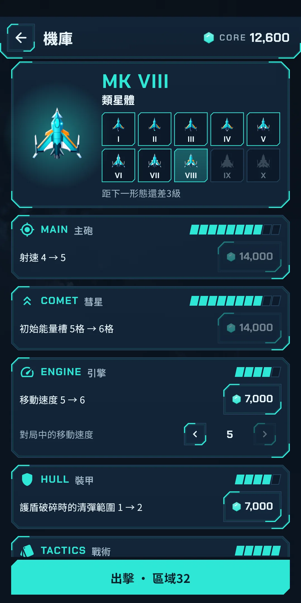
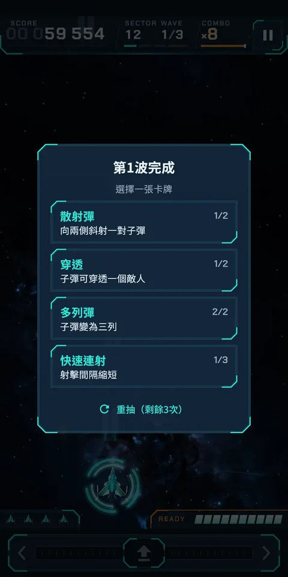
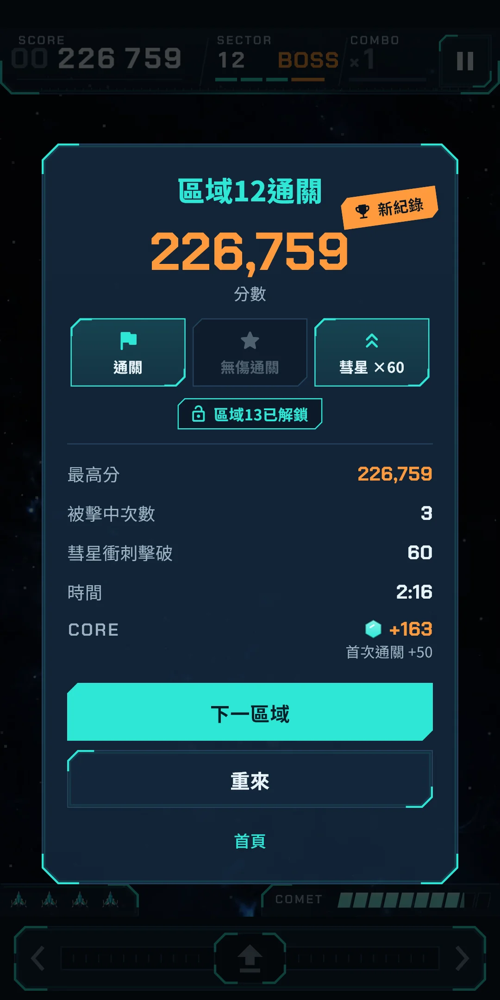
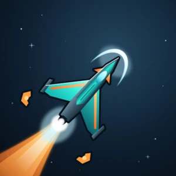

截圖








玩法說明





| 應用程式名稱 | Cometdive |
|---|---|
| 版本 | 1.0.0 |
| 開發 | Willee Project |
| 支援平台 | Android |
Cometdive 是一款單手就能玩的直式街機太空射擊遊戲。在螢幕任意位置左右拖曳，戰機就會移動，射擊自動進行。敵人成群結隊飛來，並俯衝攻擊你。擊落俯衝的敵人來填充彗星能量槽，戰機就會化身彗星，筆直貫穿整個編隊（彗星衝刺）。
| 卡牌 | 效果 |
|---|---|
| 多列彈 | 子彈變為兩列 → 三列 |
| 散射彈 | 向兩側斜射一對子彈 → 兩對 |
| 快速連射 | 射擊間隔縮短（最多 3 次） |
| 穿透 | 子彈可穿透一個敵人 → 兩個 |
| 追蹤飛彈 | 發射追蹤最近敵人的飛彈 → 更頻繁 |
| 輔助無人機 | 一架無人機在旁邊一同射擊 → 兩架 |
| 護盾 | 一層護盾：被擊中也不會損失戰機 → 再增加一層（選擇時全部補滿） |
| 彗星充能 | 彗星能量槽充能更快 → 快得多 |
| 俯衝預警 | 敵人俯衝前會閃爍橙光 |
| 額外戰機 | 備用戰機增加一架 |
| 側砲（星域 2 起） | 翼尖斜向射擊 → 更頻繁 |
| 重彈（星域 3） | 每第 4 次射擊，直線子彈傷害加倍 → 每第 3 次 |
| 連擊保持（星域 4） | 連擊維持更久，分數更高 → 維持很久 |
| 俯衝獵手（星域 5） | 對俯衝中的敵人傷害加倍 → 俯衝擊破時彗星能量也充得更快 |
| 連鎖電流（星域 6） | 擊破後電擊附近一個敵人 → 兩個 |
| 彗星爆發（星域 7） | 彗星衝刺在上方釋放衝擊波 → 返回原位時也釋放衝擊波，清除敵彈 |
| 脈衝雷射（星域 8） | 定期向上發射貫穿雷射 → 更頻繁 |
| 彗星尾跡（星域 9） | 彗星衝刺的路徑上留下灼燒敵人的火星 → 火星持續更久 |
這些都可以在圖鑑裡再看一遍（第 8 章）。某個區域裡第一次出現你沒遇過的敵人或首領時，開場會彈出介紹卡片。
敵人有 16 個系列，隨著星域提升，會出現同一系列的更高階級。階級越高越結實，4 級多一種攻擊。階級可以透過機體顏色和白色條紋分辨。
| 名稱 | 行為 |
|---|---|
| 夸克 | 編隊的主力。在編隊中偶爾射擊，俯衝時也會射出一發。 |
| 星鰩 | 翻身迅速俯衝，下降途中射出兩發。 |
| 奧爾特 | 堅硬難碎。俯衝時呈扇形撒出針彈。 |
| 星團 | 十分結實，第一次被擊中時放出兩架微中子。 |
| 伽馬 | 在編隊中用針彈精準瞄準我方戰機。 |
| 微中子 | 由星團和首領放出，直接俯衝而下。 |
| 太陽帆 | 以之字形俯衝，每次轉向都會投下子彈。 |
| 電漿槍 | 俯衝途中停頓，隨後沿直線猛扎下來。 |
| 隕石砲 | 先加熱砲管，再發射又大又慢的砲彈。 |
| 拉格朗日 | 搖晃著下沉，並排向正下方投下兩發子彈。 |
| 重力彈弓 | 用會向下轉彎的子彈壓縮你的路線。 |
| 月食 | 俯衝到一半時開火，然後返回原位。 |
| 星塵 | 橫穿飛行，沿途留下空雷。 |
| 象限 | 旋轉著俯衝，向四個方向散射子彈。 |
| 太陽透鏡 | 先畫出預警線，再沿線射下光束。 |
| 極光 | 用護罩包住下方的敵人。先打它。 |
精英是帶著標記的強化敵人。
| 名稱 | 行為 |
|---|---|
| 護盾環 | 身披能擋住兩發子彈的護環。擋不住彗星衝刺。 |
| 賞金 | 擊破可得高分和彗星能量。俯衝一次後就會逃走。 |
| 前裝甲 | 在編隊中會彈開子彈。趁它俯衝時攻擊。 |
| 加速 | 俯衝得更快、更頻繁。 |
| 分裂 | 擊毀後會迸出兩架微中子。 |
| 雷尾 | 被擊毀的地方會留下一枚空雷。 |
| 名稱 | 行為 |
|---|---|
| 小行星 | 緩緩墜落的岩石。擊碎後會裂成兩塊小石頭。 |
| 爆裂晶體 | 射擊引爆後，會一併摧毀周圍的敵人。 |
| 殘骸 | 無法摧毀的殘骸，會擋住雙方的子彈。 |
| 流星雨 | 警告之後，小流星沿一條線傾瀉而下。 |
| 重力井 | 會把你的子彈拉向中心的漩渦。 |
| 電弧柱 | 流動的電流會擋住你的子彈。擊毀一根柱子就會斷開。 |
敵方子彈不只靠顏色區分，還能透過形狀和光效分辨。
| 名稱 | 行為 |
|---|---|
| 球彈 | 圓而慢，是最常見的敵方子彈。 |
| 針彈 | 細而快，有時呈扇形散開。 |
| 砲彈 | 又大又慢，會壓縮你的閃避空間。 |
| 折轉彈 | 在固定時刻轉向一次。 |
| 空雷 | 停下後閃爍，再炸成一圈子彈。兩發即可熄滅。 |
| 光束 | 沿預警線落下的光柱。彗星衝刺也無法擊破。 |
危險的攻擊從剛開始的那一刻起就會有預警，讓你看得清楚。比如光束會先畫出預警線，空雷在爆炸前會閃爍，流星雨在警告之後傾瀉而下，彈幕簾的縫隙會顯示為一條空出來的通路。首領出場時會出現 WARNING 條。選擇俯衝預警卡牌，敵人在俯衝前會閃爍橙光。
每個區域的最後都有首領。星域的最後一個區域，會出現新的首領，或首領的第二形態（名稱後加 II），第二形態的攻擊會有所不同。
| 首領 | 行為 | 第二形態（II） |
|---|---|---|
| 泰坦 | 用兩座砲塔瞄準射擊，並從艦體放出環形與螺旋彈幕。 | 砲塔護罩被炸飛，露出三根砲管。它會移動位置，並降下留有縫隙的彈幕簾。 |
| 星雲 | 從翼砲扇形射出針彈，並放出環形與螺旋彈幕。 | 展開鰭翼猛衝，兩門翼砲交錯掃射彈幕。 |
| 稜鏡 | 兩塊晶體碎片射出針彈環，本體放出螺旋彈幕。 | 晶刃裂開，碎片環繞旋轉，並豎起光束柵欄。 |
| 恆星爐 | 從排氣砲瞄準發射砲彈，並降下留有縫隙的彈幕簾。 | 爐柵打開，火球湧出。它會猛衝、降下彈幕簾，並拋撒空雷。 |
| 天球儀 | 四個球體一邊旋轉一邊向外射擊，扇形折轉彈會轉向你。 | 圓環傾斜，球體加速。它會拋撒空雷並發射折轉彈。 |
| 離子塔 | 豎起光束柵欄，並從兩個電容器扇形掃射。 | 線圈纏上電環。它會依次點亮光束柵欄、降下彈幕簾，並召喚重力彈弓。 |
頂部有標題和首頁畫面的動態效果，右上角是齒輪形的設定按鈕。下面有兩個大按鈕和三個小按鈕。
| 按鈕 | 作用 |
|---|---|
| 開始區域 N | 直接開始已解鎖的區域中最靠後的一個，並顯示它的首領和你的最高分 |
| Daily | 開始今天的 Daily。會顯示今天的首領，如果今天已經完成過，還會顯示今日最高和連續天數 |
| 選擇區域 | 從已解鎖的區域中挑選（見下文）。會顯示目前所在星域的編號 |
| 機庫 | 用核心強化戰機（第 7 章）。會顯示核心餘額，有買得起的強化時會出現圓點 |
| 紀錄 | 開啟紀錄和圖鑑（第 8 章）。會顯示最高區域 |
區域結束後，分數會往上跳動，隨後顯示結算。你會看到分數、最高分（超過時顯示新紀錄）、被擊中次數、彗星衝刺擊破、時間，以及三個獎章位（通關、無傷通關、彗星 ×N）。通關時會出現區域 N 已解鎖，並顯示獲得的核心（首次通關 +N、星域最終區域首次通關 +N）。如果有買得起的強化，會出現可強化 N 項和機庫按鈕。按鈕有下一區域（通關時）、重來和首頁。
機庫是用遊戲中獲得的核心強化戰機的地方。從首頁的機庫，或結算畫面的機庫按鈕進入。這個畫面沒有橫幅廣告。
| 分支 | 階段 | 提升的內容 |
|---|---|---|
| 主砲 | 10 | 射速、子彈粗細、子彈傷害 |
| 彗星 | 10 | 初始能量槽、衝刺寬度、衝刺對首領的傷害 |
| 引擎 | 5 | 移動速度 |
| 裝甲 | 5 | 初始護盾、首領戰前補充一格空護盾、護盾破碎時清除周圍敵彈（範圍也會變大） |
| 戰術 | 5 | 第 1 波前選擇一張卡牌、每個區域的重抽次數（1～3 次）、從四張卡牌中選擇 |
已購買階段的總數增加，戰機的形態會在十種之間變化：MK I（星火）、MK II（耀斑）、MK III（烈焰）、MK IV（煉獄）、MK V（超新星）、MK VI（脈衝星）、MK VII（磁星）、MK VIII（類星體）、MK IX（極超新星）、MK X（大爆炸）。階段總數達到 3、7、12、19、23、26、29、32、35 時會變化。形態改變的是外觀，能力由買到的強化決定。變化的瞬間會播放演出，並顯示下次出擊起為 MK N。
從首頁的紀錄進入。
從首頁右上角的設定（齒輪）進入。遊戲過程中也可以從暫停視窗進入。分為遊戲和一般兩組。
| 項目 | 說明 |
|---|---|
| 音效 | 開關音效 |
| 震動 | 開關震動（被擊中、擊敗首領、彗星衝刺、戰機形態改變時） |
| 減少特效 | 減少晃動、閃爍等特效 |
| 遊戲音樂 | 開關遊戲過程中的背景音樂 |
| 選單音樂 | 開關主畫面和選單中播放的音樂 |
| 音樂音量 | 以 10% 為單位選擇遊戲音樂和選單音樂的音量。兩者至少有一個開啟時才能調整 |
| 音效音量 | 以 10% 為單位選擇音效的音量。音效開啟時才能調整 |
| 畫面晃動 | 被擊中或大爆炸時畫面會晃動。可以關閉 |
| 項目 | 說明 |
|---|---|
| 語言 | 跟隨系統（預設），或從清單（English·日本語·한국어·简体中文·繁體中文）中自己選擇 |
| 重看新手教學 | 重新玩一遍新手教學。不計入紀錄 |
| 隱私權選項 | 查看或變更廣告同意設定。只在需要同意的地區（如歐洲）顯示 |
| 關於 | 版本、本說明（玩法說明）、隱私權政策、開放原始碼授權。在授權清單中可以看到製作圖片和音樂所用的工具 |
畫面顏色只有一種深色主題。